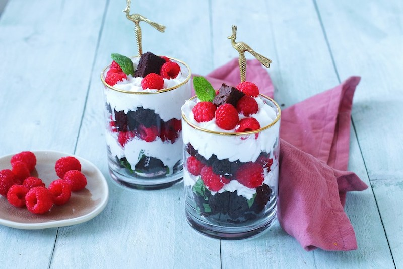

Brownies met frambozen en slagroom.
Dit is een makkelijk lekker snel nagerecht, het staat binnen no-time op tafel.
Ingrediënten
- 175 brownie
- 1 bus slagroom
- 100 gram frambozen
- een paar takjes munt
Bereidingswijze
- Snijd de brownie in blokjes.
- Verdeel een laagje brownie blokjes onderin een glaasje, vervolgens een laagje slagroom en frambozen. Leg er weer een laagje brownie, munt, frambozen en slagroom overheen.
- Maak af met een paar laatste brownie blokjes, munt en frambozen.
